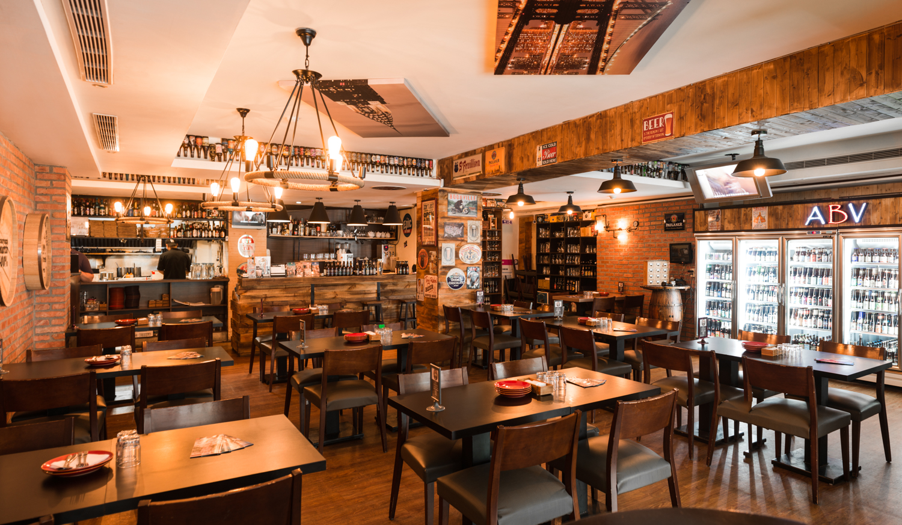
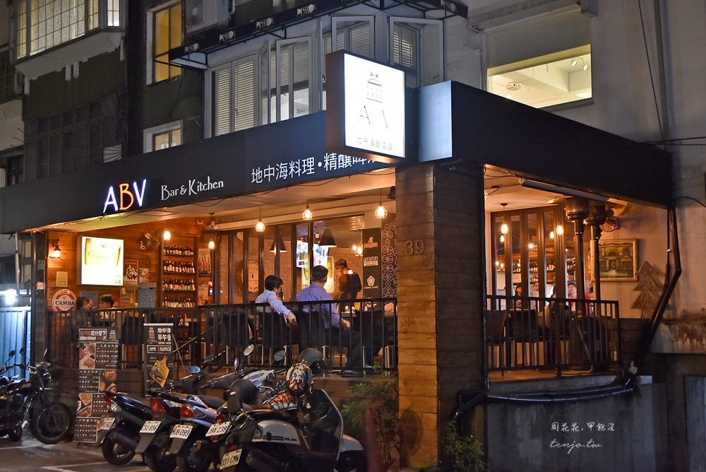
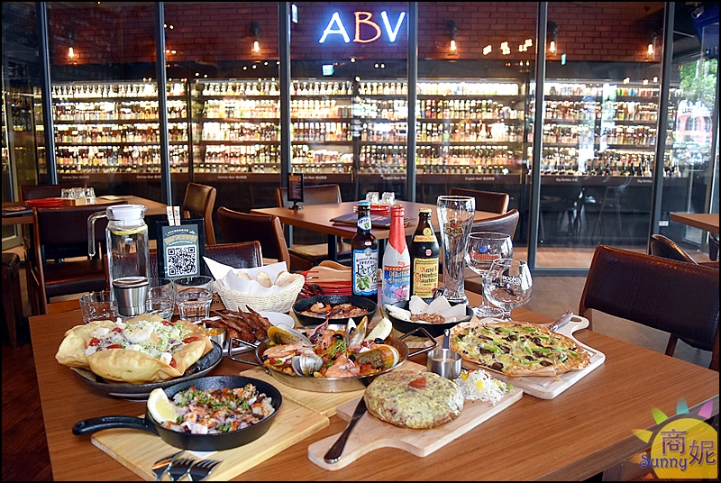
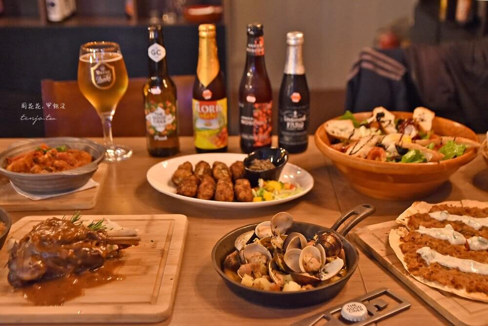
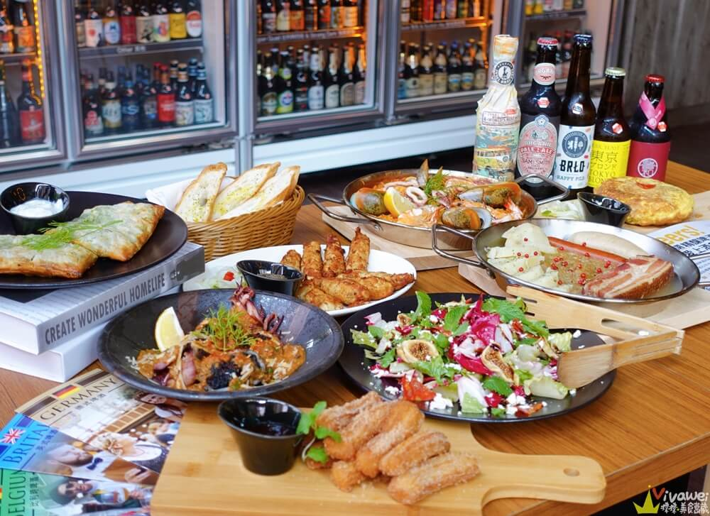
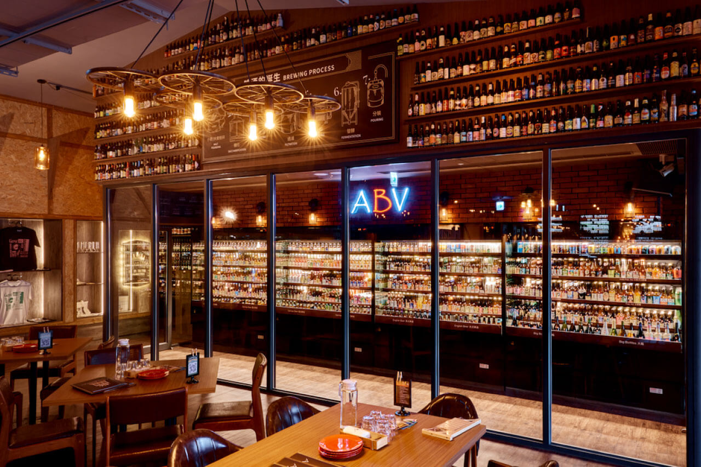

異國料理與客製化調酒~多人聚餐首推！
By 吃貨小姐
2023/07/20

假日睡到飽慵懶地起床，和許久未見面的姐妹約在三井 Outlet 附近的「ABV 地中海餐酒館」，這家餐廳距離機場捷運 A9 林口站步行大約 10 分鐘，交通還算方便。
來之前就有聽去過地中海玩的同事提過，這家餐廳的料理很道地，而且令人驚艷的是，還提供上百款的各國精釀啤酒，喜歡品酒的我，怎麼能錯過呢~


這間店寬敞舒適，整體設計風格偏向歐式風情，空間規劃上有高腳座位區和沙發區，座位和座位間也還算有空間，不會靠太近，而且啊~這間店沒有限時，想做多久就坐多久，超讚的！
一入店內，我看到超大酒櫃，琳瑯滿目的酒品讓我大開眼界，德式啤酒、英式啤酒、印度式淡愛爾、比利時啤酒、拉格、皮爾森、琥珀愛爾、台灣精釀啤酒等，和我一樣有選擇障礙的朋友，可以先請店家的侍酒師幫忙介紹，他會詢問你平常喜歡的啤酒風味，如偏酸、甜、苦、果香、麥香等，再介紹每款酒的特色，幫助你選擇適合自己的那支酒，有這個服務真的是很貼心。


餐點部分我們點了西南凱薩沙拉、希臘優格黃瓜醬左批塔作為前菜，主餐點了經典西班牙海鮮飯、鮮蕈松露披薩、西班牙臘腸馬鈴薯蛋餅，還有巴薩米克蘑菇炒蝦和葡萄牙式馬介体等小點，每一道都能吃出道地的異國風情，彷彿置身國外。

法國菜、葡萄牙菜、西班牙菜、希臘菜等料理，這裡真的是應有盡有、選擇多樣 (只怕你口袋不夠深 XDD) ，但是以餐酒館來說，這價位算 CP 值很高，建議大家揪朋友一起 share，可以一次享受到多道異國料理！